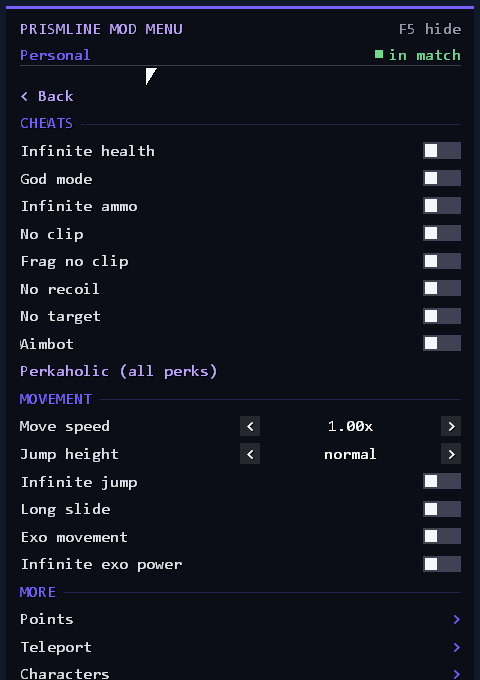
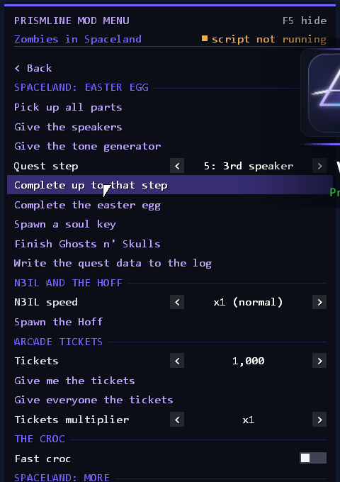
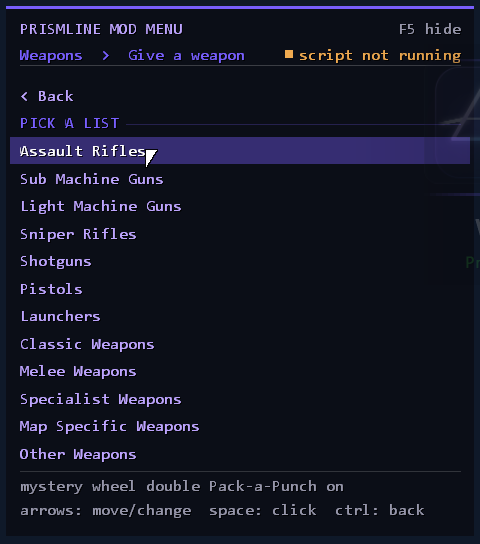
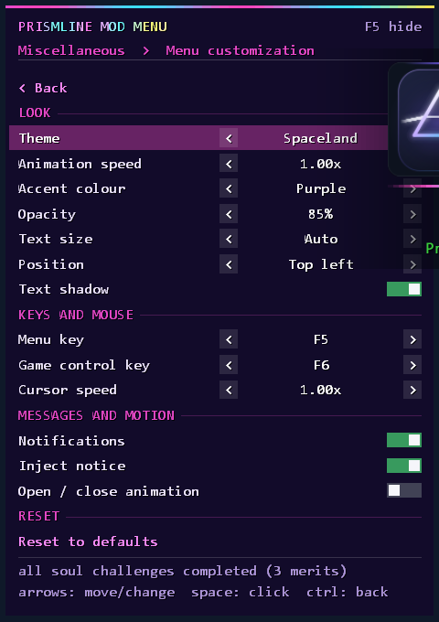
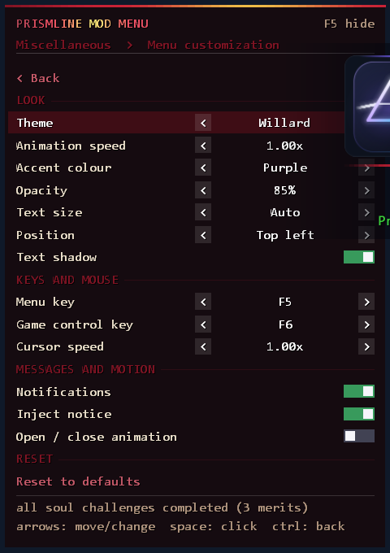
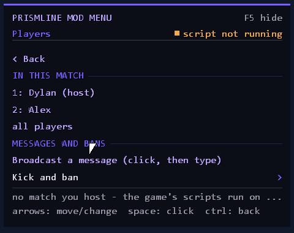

One menu for everything in your Zombies match.
Prismline is an in-game mod menu for Call of Duty: Infinite Warfare Zombies on Steam. Press F5 and change points, weapons, zombies, powerups and more, without installing anything into the game folder.

Small, tidy and easy to remove
The loader injects the menu into the running game, so your game files are never touched. Press Eject and everything is put back. The menu is a plain dark panel you drive with the arrow keys or the mouse, with the pages grouped the way you would look for them.
No game files changed
The loader and the menu live in their own folder. The game folder stays as Steam left it.
Always the current build
Every time the loader opens it checks for a newer, signed release and swaps the files in by itself.
Remembered between runs
Toggles, hotkeys and theme live in config\menu.ini next to the loader, so updates never reset them.
What you find under F5
Ten pages on the main screen. A few of the things inside them:
You, your way
God mode, no clip, move speed, jump height, infinite ammo and points, teleports and more for your own player, with a Players page that applies them to others.
Any weapon, by category
Give yourself any gun from assault rifles to wonder weapons, plain, Pack-a-Punched or double Pack-a-Punched, and put elemental ammo on the gun in your hands.
Change how you look
Put another model on yourself or another player, from the enemies and props the current map has loaded.
Run the horde
Summon enemies, gather them at your crosshair, make them crawl, spin or speed up, show them through walls, or clear the room.
Shoot to spawn
Drop any of the nine powerups, or set one to spawn wherever your bullets land: Max Ammo, Insta-Kill, Double Points, Nuke and the rest.
Multipliers and doors
Points and XP multipliers, open every door, switch on the power, Armageddon, Forge mode and a map changer.
Per-map extras
Spaceland gets quest-step helpers, N3IL and the Hoff, an arcade ticket multiplier and more. Pages follow the map you are on.
Profile and emblems
Set your level and icon, unlock items and turn a picture into an emblem from the menu.
Make it yours
Pick the panel's look: Rainbow, Fire, Ocean, Neon, Matrix, Sunset, or the animated Spaceland and Willard themes.
A look at the menu
Click a picture to see it larger.






Download, activate, press F5
You only need one file. The loader downloads the menu and its data the first time it runs.
- Put it in its own folderAnywhere you like, for example
C:\Prismline. It will create its config and log folders next to itself. - Run it and activateOpen
PrismlineLoader.exe. The Updates row fetches the menu on the first run. Paste your license key and press Activate; it is remembered. - Open the game, then press InjectStart Infinite Warfare and wait for its main menu, then press Inject in the loader. Or switch on inject when the game starts.
- Start your match and press F5Start your Zombies match after injecting. F5 shows the menu, F6 hands the mouse back to the game while it stays up.
config folder is never touched. To remove everything, press Eject and delete the folder.Questions people ask
Does it change my game files?
No. The loader injects the menu into the running game. Pressing Eject (or closing the game) puts everything back as it was.
Can I use it online?
It is built for your own Zombies matches. Most features are done by the game's own scripts, which only run on the host, so in a public match you do not host they cannot work. Using it in public lobbies you do host is at your own risk.
The menu does not show up when I press F5.
Make sure the loader says the game is running and Prismline is loaded, and that you started your match after injecting. If you injected during a match, restart it. If the game runs as administrator, run the loader as administrator too.
Windows says the file might harm my PC.
The loader is a small program that injects into another program, and it is not code-signed, so SmartScreen and some antivirus tools may flag it. Only download it from this page or the GitHub repository, and judge for yourself whether you trust it.
Where do I get a license key?
Message c8.dylan on Discord.
How do I update?
You do not need to do anything: open the loader and it fetches the newest release. The Updates row tells you the result.